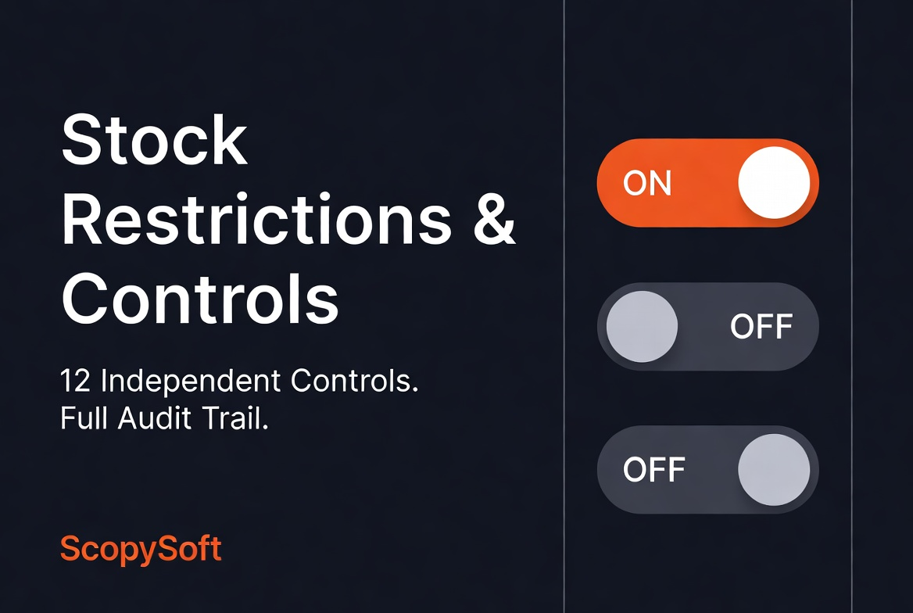
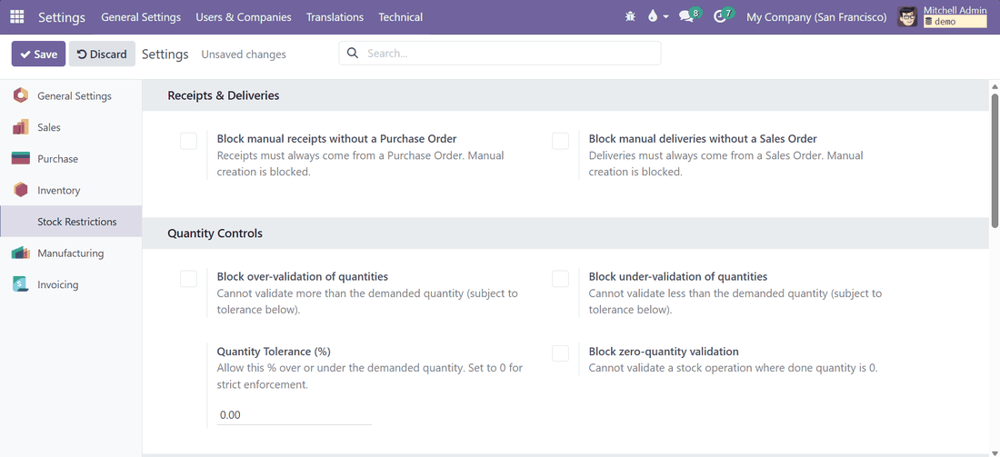
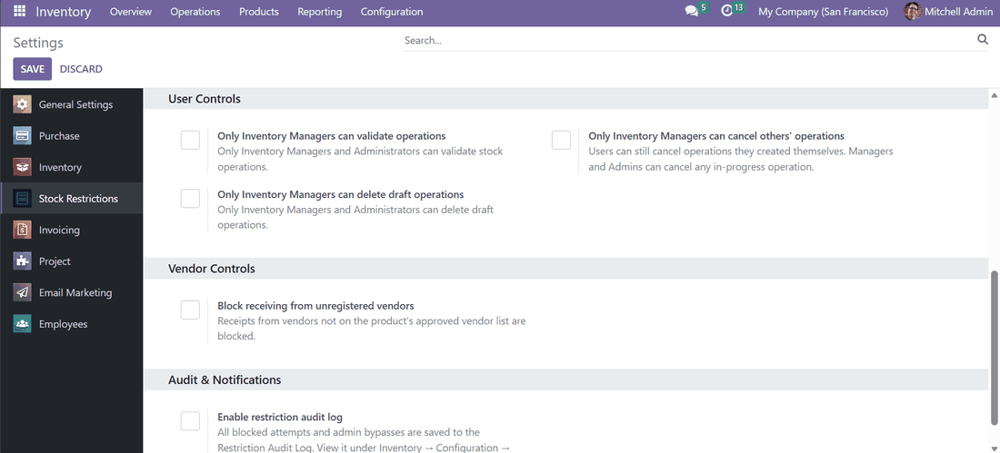
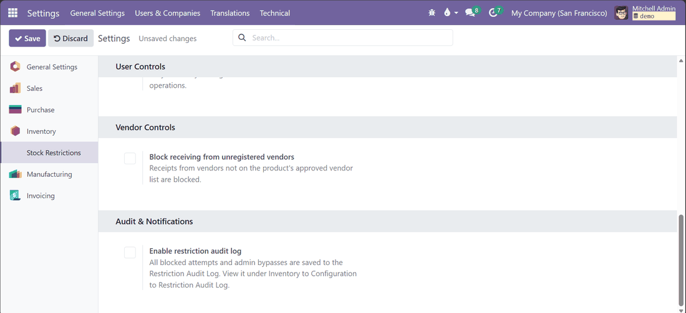

Block the mistakes before they hit your warehouse.
A receiving clerk fat-fingers a quantity and stock goes negative. A junior staffer deletes a draft transfer that someone else was still working on. A receipt gets created with no Purchase Order behind it, and nobody notices until the numbers stop matching.
None of this is malicious. It is just what happens when Odoo lets anyone do anything to a stock operation, at any time. This module puts a guardrail on each of those moments, with one toggle each.

Every restriction lives in Inventory to Configuration to Settings. Flip what you need, leave the rest off. No code, no extra menus to learn.



Every blocked attempt, across all restrictions, is written to the audit log automatically, with the user, the restriction, and what they tried to do. Administrators always bypass every restriction; that is intentional, since someone needs an escape hatch when a real exception comes up. Bypass logging for Administrators currently covers manual receipt and delivery restrictions, with full bypass logging across every restriction on the roadmap.
Install the module and open Inventory to Configuration to Settings.
Toggle on whichever restrictions match how your team should work. Leave the rest off.
Everything is enforced immediately. Blocked attempts and bypasses start showing up in the audit log right away.
Do I have to turn on every restriction?
No. Each one is an independent toggle. Turn on only what fits your workflow.
Can Administrators still get past a restriction if there is a real exception?
Yes, always. Every blocked attempt from regular users is logged in full. Admin bypass logging currently covers manual receipt and delivery restrictions, with broader bypass logging planned.
Can a regular user cancel their own transfer without asking a manager?
Yes. The cancel restriction only stops users from cancelling operations created by someone else. Cancelling your own mistake never needs a manager.
Does this work with multi-company setups?
Yes. Every restriction is configured per company.
Will this slow down my inventory team?
Only when they are about to do something the rules say should not happen. Everything else works exactly as it did before.
What happens to the audit log entries over time?
They are kept indefinitely unless you archive or delete them yourself. Nothing is auto-purged.